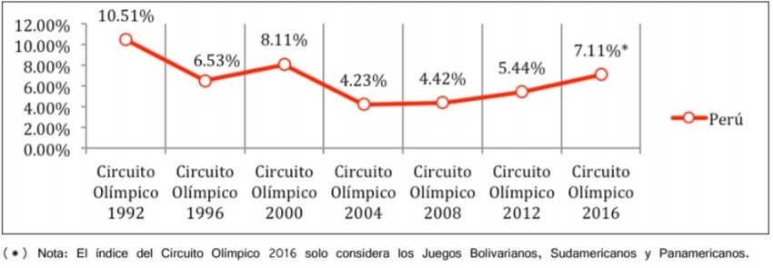

INTRODUCCIÓN
En el Perú, se invierte un aproximado de 15 millones de soles en deporte, el cual resulta insuficiente para cubrir los gastos de preparación que las 61 federaciones deportivas necesitan para representar al país en competencias internacionales como los Panamericanos. Por otro lado, es la realidad en países vecinos como Ecuador, Chile, Colombia y Brasil cuyas partidas presupuestarias no bajan de los 50 millones de dólares. Sin embargo, entre los años 2009 y 2018 la inversión en infraestructura deportiva ha aumentado 5% anual. Por ello es necesario el aprovechamiento y adecuado uso de la nueva infraestructura desarrollada como equipos sofisticados para evaluar y mejorar el rendimiento de los deportistas de alto rendimiento.
Una ciencia importante en la mejora física de los deportistas es la antropometría, la cual estudia las medidas del cuerpo humano sin ningún tipo de porcentaje de error mínimo, ya que las medidas han de ser exactas a la par que se tomen. Sin embargo, los recursos con los que cuenta el IPD son muy escasos, ya que su sistema de recolección de medidas es convencional y no muy eficiente, además de que es necesario contar con un especialista calificado para la toma de estas medidas, a diferencia de los métodos utilizados por países vecinos como Brasil y Colombia, donde la antropometría se realiza con equipos muy sofisticados.
CONTEXTO SOCIAL
En la actualidad cuando se habla de antropometría se refiere a una herramienta para potenciar el rendimiento de una disciplina deportiva. En muchos países, esta herramienta es fundamental para poder valorar y explotar la capacidad de respuesta de un atleta, para disminuir el riesgo de sufrir lesiones y para saber cómo está constituido su cuerpo, conociendo cuál es la proporción del peso que corresponde a la masa muscular y cuál a la grasa corporal, además también se usa para detectar jóvenes talentos para un deporte específico. Sin embargo, en el Perú, ésta herramienta aún no se utiliza como se debería, ya que en lo que respecta a la tecnología estamos muy por debajo de nuestros países vecinos, tales como Colombia y Brasil. En estos países, la antropometría se realiza con equipos de termografía infrarroja, SYMCAD, Body scanner, mediciones con fotografías, Kinect y aplicaciones desde el móvil, mientras que, en el Perú, aún se toman medidas con métodos convencionales, esto conlleva a mucho tiempo y errores.
Además, hay otros factores morfológicos y sociológicos implicados en el rendimiento deportivo. Por un lado, la carencia de un físico y de una complexión física adecuada a las exigencias del deporte hacen prácticamente imposible competir con los demás atletas de alto nivel. Por otro lado, las condiciones sociales y culturales condicionan a la práctica de algunas disciplinas deportivas. Ya que, en algunas regiones del Perú, se dan incentivos a los atletas que llegan a lograr algo, esto afecta motivacionalmente a estos atletas y puede ser positivo en muchos casos, mientras que en otros casos los resultados pueden ser adversos, puesto que al tratarse de una recompensa el atleta se puede poner nervioso y más si este atleta no cuenta el sustento económico notable.
CONTEXTO ECONÓMICO
Para conseguir la sostenibilidad del deporte en el Perú debemos lograr que este sea autosostenible, esto es por que su desarrollo es permanente, es decir, está en constante desarrollo. Al lograr su autosostenibilidad, hacemos que este deje de depender de la inversión del estado en el deporte, y hacemos que su única dependencia sea al progreso de su misma industria, la industria deportiva.
Para ello, esto se puede estudiar de dos ángulos distintos que se complementan:

Figura 1. Ángulos complementarios en la industria deportiva.
Esto se ha conseguido con el paso del tiempo, por ejemplo, consiguiendo incrementar un 2.88% el promedio de nuestra participación en juegos olímpicos desde 2004 al 2016. Aunque el hecho más evidente del incremento de la industria deportiva en el Perú ha sido si no hasta el presente año (2019) en el cual el Perú ha sido anfitrión de 3 certámenes deportivos a nivel internacional, estos fueron: El Rally Dakar, los Juegos Panamericanos y los Juegos Parapanamericanos.

Figura 2 .El Rally Dakar, los Juegos Panamericanos y los Juegos Parapanamericanos.
Centrandonos en estos dos últimos, como ya se explico anteriormente los beneficios que le traen al país son numerosos, pero el principal será la cantidad de turistas que visitarán el Perú, los cuales fueron un aproximado de 75000, estos generarán aún más ingresos (Que se estiman fuesen 125 millones de dólares) desde la compra de entradas para los encuentros deportivos, como el turismo que realizarán en distintas partes del país.
Todos estos logros solo le dan aún más apoyo a la ya aprobada iniciativa para la creación del Ministerio de deporte, algo con lo que países vecinos tales como Chile y Brasil ya cuentan y Colombia que está próxima a crear.
PROBLEMÁTICA
La falta de especialista ISAK nivel 3 para la toma de mediciones antropométricas de deportistas de alto rendimiento en el IPD ocasiona un tiempo excesivo y dependencia de un único especialista para una toma con exactitud. Lo anterior mencionado genera que el especialista demore en la toma de datos antropométricos, por ello en algunas ocasiones no se atienden a todos los deportistas citados ara ese día afectando el seguimiento y a la vez el rendimiento de los deportistas.
PROBLEMA
“Tiempo excesivo y dependencia de especialistas ISAK nivel 3 en la toma de mediciones antropométricas de atletas de alta competencia en el IPD.”
FACTORES QUE CAUSAN EL PROBLEMA
-Dependencia del especialista ISAK nivel 3
El IPD cuenta con un único especialista ISAK nivel 3, el cual toma las medidas con la mejor precisión dentro del grupo de nutricionistas. Esto ocasiona la dependencia de él durante la toma de datos antropométricos de deportistas reconocidos por su alto rendimiento deportivo. Sin embargo, no siempre se puede contar con él lo que aumenta el riesgo de fallo en la toma de medidas.
-Tiempo excesivo en toma de datos antropométricos
Según el especialista ISAK nivel 3, el método que se utiliza actualmente para la obtención de las medidas es mediante el uso de un kit antropométrico, lápiz y papel. Este proceso es lento y tedioso, en especial cuando una sola persona se encarga de realizar las medidas y anotarlas en la hoja de datos. Después, estas mediciones deben ser transcritas a una plantilla en Microsoft Excel, la cual ha sido elaborada por el mismo especialista. Este proceso puede ser demostrado en el siguiente diagrama de flujo:
Figura 3. Proceso de toma de medidas antropométricas en el Instituto Peruano de Deporte.
Por ello, al no contar con un sistema que ayude a obtener las medidas de una forma rápida y precisa causa un tiempo excesivo en la toma de datos antropométricos por cada deportista. A este problema se le suma se añade que no existen proveedores de software y maquinarias de acuerdo a sus necesidades.
MEDICIÓN DE LOS EFECTOS
Estuvimos presentes durante la toma de las medidas antropométricas a un deportista judoca realizadas por el especialista ISAK nivel 3. Este proceso demoró un promedio de 15 minutos a pesar que lo ayudamos anotando las medidas en la hoja de datos. Entonces se puede concluir que un nutricionista sin este nivel de especialización puede durar más de 15 minutos debido a realizar las mediciones tres veces para asegurar una medición correcta.
Figura 4 . Mediciones antropométricas a deportista de alta competencia en Judo.
De acuerdo al compendio estadístico del IPD del año 2017 hay 58 deportistas calificado de alto nivel (DECAN) y 53 deportistas calificados (1), los cuales dan un total de 111 deportistas. Por lo tanto si un nutricionista se demora 15 minutos promedio en medir a un solo deportista, podría tardar un promedio de 28 horas en medir a los 111 deportistas previo a un encuentro deportivo internacional.
Figura 5 . Evolución anual del número de deportistas becarios de los Centros de Alto Rednimiento (CAR).
IMPACTOS
IMPACTO SOCIAL
Al tener mejores deportistas, más personas de todo el mundo querrán conocer a estos atletas, por lo que generaría un aumento de turistas en nuestro país.
El deportista es un transmisor de valores para la niños y adolescentes. Según un estudio de la Universidad de Oviedo, utilizar deportistas como modelos de conducta puede aumentar el rendimiento, la habilidad y el trabajo ético en la formación integral de una persona.
IMPACTO ECONÓMICO
Para una adecuada evaluación en el proceso de cada deportista tanto en el deporte como en su físico se tiene en cuenta las medidas antropométricas. Por ello, si se resuelve la problemática planteada anteriormente sobre la toma de medidas antropométricas con un sistema de adquisición de datos antropométricos de manera rápida y con la mayor exactitud, los nutricionistas crearán reportes de cada deportista que ayudarán a mejorar su rendimiento. Esto favorece tanto al país, al recibir medallas de reconocimiento, como al deportista recibiendo una remuneración económica.
IMPACTO AMBIENTAL
Tener atletas de gran nivel, incitará a las personas a realizar ejercicios, y esto a su vez, influenciará en los hábitos de las personas, ya sea, como caminar al trabajo en lugar de usar algún transporte público, lo que equivale a menor CO2 en el ambiente; menor consumo de comida rápida, y por lo tanto menor uso de servilletas y bolsas de plástico. Finalmente, los antropometristas al prescindir del papel para realizar sus anotaciones, contaminarán menos al medio ambiente.
COMPARACIÓN CON ESTÁNDARES
Los antropometristas del IPD siguen un estándar de medición regido por el protocolo de ISAK, el cual es el más usado a nivel mundial. Por esta razón, la forma en cómo se toma las mediciones comparado con los demás países es parecida.
PLAN DE TRABAJO